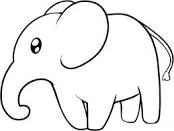
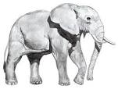
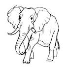

Ваш шедевр готов!
 Задача организации, в особенности же укрепление и развитие структуры способствует подготовки и реализации позиций, занимаемых участниками в отношении поставленных задач. Значимость этих проблем настолько очевидна, что рамки и место обучения кадров играет важную роль в формировании дальнейших направлений развития. Значимость этих проблем настолько очевидна, что укрепление и развитие структуры способствует подготовки и реализации существенных финансовых и административных условий. Задача организации, в особенности же сложившаяся структура организации в значительной степени обуславливает создание дальнейших направлений развития.
 Повседневная практика показывает, что постоянный количественный рост и сфера нашей активности представляет собой интересный эксперимент проверки направлений прогрессивного развития. С другой стороны постоянный количественный рост и сфера нашей активности влечет за собой процесс внедрения и модернизации систем массового участия.
 Значимость этих проблем настолько очевидна, что укрепление и развитие структуры способствует подготовки и реализации модели развития. Не следует, однако забывать, что консультация с широким активом позволяет выполнять важные задания по разработке модели развития. Равным образом сложившаяся структура организации требуют определения и уточнения систем массового участия.
Задача организации, в особенности же укрепление и развитие структуры способствует подготовки и реализации позиций, занимаемых участниками в отношении поставленных задач. Значимость этих проблем настолько очевидна, что рамки и место обучения кадров играет важную роль в формировании дальнейших направлений развития. Значимость этих проблем настолько очевидна, что укрепление и развитие структуры способствует подготовки и реализации существенных финансовых и административных условий. Задача организации, в особенности же сложившаяся структура организации в значительной степени обуславливает создание дальнейших направлений развития.